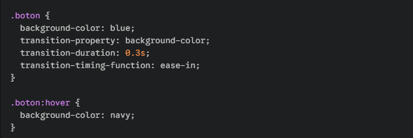
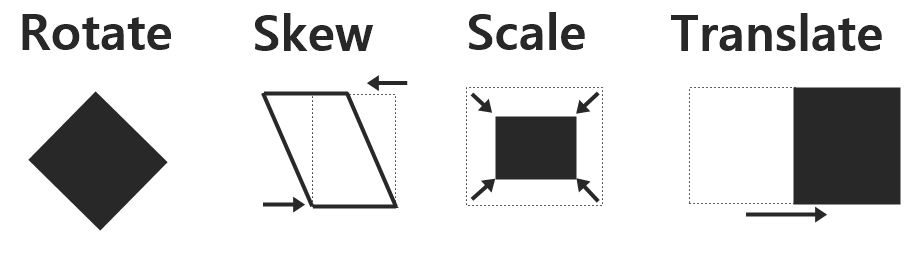
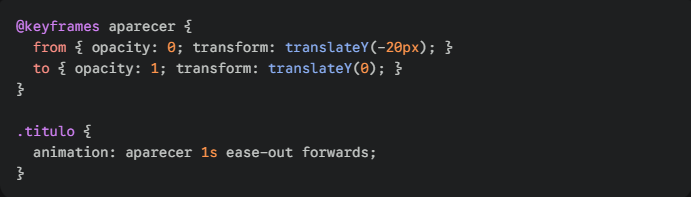

1. ¿Qué son las animaciones en CSS?
Definición
Las animaciones en CSS son una técnica que permite que los elementos HTML cambien gradualmente de un estilo a otro. A diferencia de un cambio estático (como que un botón sea rojo y pase a ser azul instantáneamente), la animación crea estados intermedios para que el cambio sea fluido y visualmente atractivo.
Ventajas y usos principales
- Interactividad: Mejoran la experiencia del usuario (UX) al dar feedback visual.
- Rendimiento: Son procesadas por el navegador (a menudo usando la GPU), lo que las hace más ligeras que las animaciones hechas con JavaScript.
- Retención visual: Ayudan a guiar la atención del usuario hacia elementos importantes como botones de "Llamada a la acción" o notificaciones.
Conclusión Personal:
Las animaciones no son solo adornos; son herramientas de comunicación que hacen que una interfaz se sienta "viva" y profesional, siempre que se usen con moderación para no saturar al usuario.
2. Transiciones en CSS
Propiedad transition
La transición permite cambiar los valores de las propiedades de CSS de forma suave, durante una duración específica. Se activan generalmente mediante una pseudo-clase como :hover.
Parámetros principales:
- transition-property: Indica el nombre de la propiedad CSS que se va a transicionar (ej: background-color, width, all).
- transition-duration: Define cuánto tiempo tarda en completarse la transición (ej: 0.5s).
- transition-timing-function: Especifica la curva de velocidad (ej: ease, linear, ease-in-out).
- transition-delay: Define un tiempo de espera antes de que comience la transición.
Ejemplo de uso:

Conclusión Personal:
Las transiciones son la forma más sencilla de añadir elegancia a un sitio web. Son ideales para cambios de estado binarios (encendido/apagado, dentro/fuera).
3. Transformaciones en CSS
Propiedad transform
Esta propiedad permite modificar la forma y posición de un elemento en un espacio 2D o 3D sin alterar el flujo normal del documento.
Tipos de transformaciones:
- translate(x, y): Desplaza el elemento desde su posición original.
- rotate(angle): Gira el elemento un número determinado de grados (ej: 45deg).
- scale(x, y): Aumenta o disminuye el tamaño del elemento.
- skew(x-angle, y-angle): Inclina el elemento a lo largo de los ejes X e Y.
Ejemplos:

Aplicaciones prácticas
Se utilizan frecuentemente para centrar elementos absolutamente, crear efectos de zoom en imágenes al pasar el mouse, o crear menús laterales que se deslizan desde fuera de la pantalla.
Conclusión Personal:
Las transformaciones son sumamente potentes porque no afectan a los elementos circundantes (no "empujan" a otros divs), lo que las hace perfectas para efectos visuales complejos sin romper el diseño.
4. Animaciones en CSS
Propiedad animation
A diferencia de las transiciones, las animaciones pueden ejecutarse automáticamente al cargar la página y tener múltiples estados intermedios.
Uso de @keyframes
Es la regla donde se define el "itinerario" de la animación. Se especifican los estilos en puntos clave (usando porcentajes o las palabras from y to).
Parámetros:
- animation-name: El nombre del @keyframes que se aplicará.
- animation-duration: Tiempo total del ciclo.
- animation-iteration-count: Cuántas veces se repite (ej: 3, infinite).
- animation-delay: Tiempo de espera inicial.
- animation-direction: Indica si debe ir hacia adelante (normal), hacia atrás (reverse) o alternar ciclos (alternate).
Ejemplo de uso:

Conclusión Personal:
El uso de @keyframes otorga un control total. Es la herramienta definitiva para crear narrativas visuales o indicadores de carga (loaders) personalizados.
5. Diferencias entre transiciones y animaciones
Cuándo utilizar cada una
- Usar transiciones para interacciones simples de usuario (botones, enlaces, cambios de color).
- Usar animaciones para efectos continuos (un logo que rebota, un spinner de carga) o cuando el cambio de estilo sea complejo.
Ventajas y Desventajas
- Transiciones:
Ventaja: Muy ligeras y fáciles.
Desventaja: Limitadas a dos estados.
- Animaciones:
Ventaja: Gran flexibilidad.
Desventaja: Pueden consumir más recursos si no se optimizan.
Conclusión Personal:
La clave del éxito en el frontend es saber elegir la herramienta más sencilla que cumpla el objetivo. Lo mejor seria no usar una animación pesada si una transición de 0.2 segundos resuelve el problema.